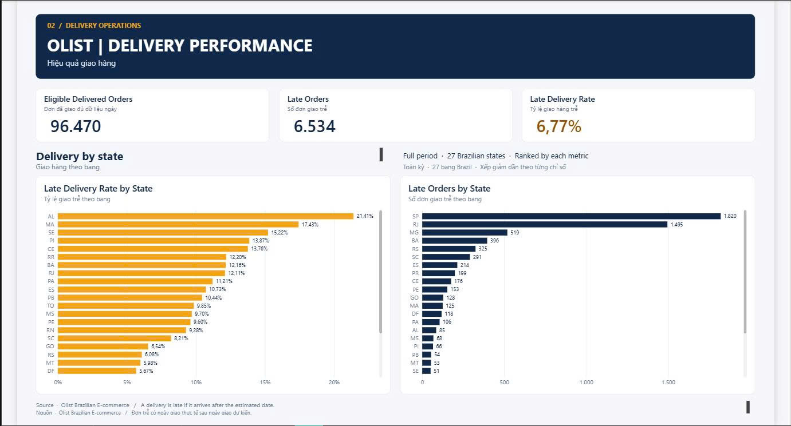

2026 · SQL Server, Power BI, GitHub
Olist E-commerce
Order & Delivery Analysis
Dự án độc lập, tham khảo hướng dẫn khi cần.
Bài toán và dữ liệu
Phân tích xu hướng đơn hàng theo tháng, giá trị hàng hóa trong các đơn đã giao và tình hình giao trễ theo bang. Dự án sử dụng bộ dữ liệu công khai Olist trên Kaggle cho một tình huống phân tích vận hành giả định.
Dữ liệu gồm 99.441 đơn hàng, 112.650 dòng sản phẩm và 99.441 bản ghi khách hàng. Dữ liệu đơn hàng trải từ tháng 9/2016 đến tháng 10/2018. Biểu đồ theo tháng dùng giai đoạn tháng 1/2017–8/2018 vì các tháng ở hai đầu kỳ có ít dữ liệu. Thẻ KPI mặc định và so sánh theo bang dùng toàn bộ kỳ lịch sử.
Quy trình thực hiện
- Khảo sát và nối dữ liệu. Dùng SQL Server nối bảng đơn hàng, khách hàng và chi tiết sản phẩm. Kiểm tra dữ liệu thiếu và bất thường.
- Làm sạch và tính KPI. Tạo SQL View để xử lý lỗi khi nhập CSV, đối chiếu với CSV gốc và viết truy vấn tính chỉ số.
- Báo cáo bằng Power BI. Xây dựng hai trang Order Overview và Delivery Performance. Đối chiếu các chỉ số tổng hợp giữa SQL Server và Power BI.
Chất lượng dữ liệu
- Lỗi giá trị tiền tệ.
pricevàfreight_valuecao gấp 100 lần sau lần nhập CSV vào SQL Server của dự án. Viewdbo.v_olist_order_items_cleanhiệu chỉnh giá trị đã nhập. Số dòng và số liệu tổng hợp được đối chiếu với CSV nguồn. Chỉ áp dụng hiệu chỉnh cho dữ liệu gặp đúng lỗi này. - Thiếu dòng sản phẩm. 775 đơn không có dòng sản phẩm tương ứng. Các đơn vẫn được giữ trong bảng đơn hàng. Tổng số đơn dựa trên
order_idriêng biệt. - Thiếu ngày giao thực tế. 8 đơn
deliveredthiếu ngày giao thực tế. Chúng được giữ trong dữ liệu và loại khỏi mẫu số tính giao trễ. - Bất thường thời gian. 23 đơn có thời điểm giao cho khách sớm hơn thời điểm bàn giao cho đơn vị vận chuyển. Các trường hợp này được ghi nhận, giữ nguyên mốc thời gian gốc.
KPI và kết quả
| Chỉ số | Kết quả | Cách tính |
|---|---|---|
| Tổng số đơn | 99.441 | Số order_id riêng biệt ở mọi trạng thái. |
| Giá trị hàng hóa trong đơn đã giao | 13.221.498,11 BRL | Tổng price đã làm sạch của các đơn delivered, không tính phí vận chuyển. |
| Đơn đã giao đủ điều kiện | 96.470 | Đơn đã giao có cả ngày giao thực tế và ngày giao dự kiến. |
| Đơn giao trễ | 6.534 | Đơn đủ điều kiện có ngày giao thực tế sau ngày giao dự kiến. |
| Tỷ lệ giao trễ | 6,77% | Số đơn giao trễ chia cho số đơn đã giao đủ điều kiện. |
AL có tỷ lệ giao trễ cao nhất (21,41%, với 85/397 đơn đủ điều kiện). SP có nhiều đơn giao trễ nhất (1.820 đơn), với tỷ lệ 4,49%. Hai chỉ số giúp chọn địa bàn cần tìm hiểu thêm.
Dashboard Power BI


